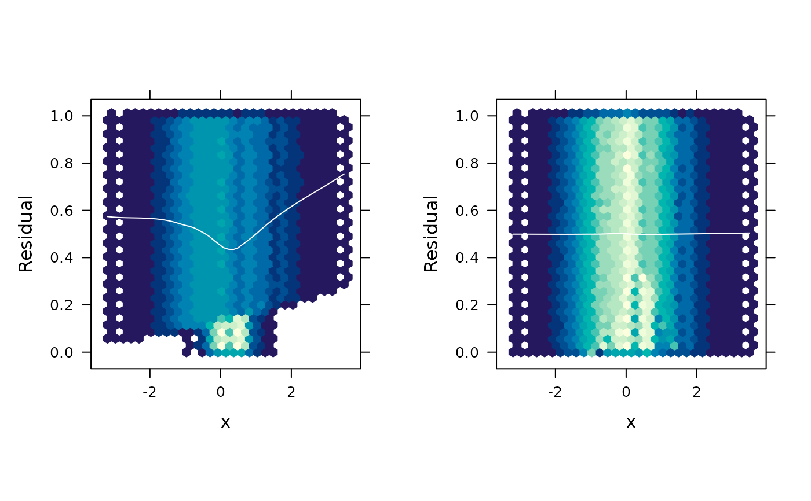

Functional residual density plot
fredplot.RdGenerates a functional residual-vs-predictor plot, visualizing the density of the functional residuals as a heatmap rendered on either the uniform or normal scale.
Usage
fredplot(
object,
x,
resolution = 101,
scale = c("uniform", "normal"),
type = c("kde", "hex"),
n = 100,
plot = TRUE,
color.palette = function(n) hcl.colors(n, "YlGnBu"),
colorkey = FALSE,
smooth = TRUE,
smooth.col = "white",
smooth.lwd = 1,
smooth.lty = "solid",
xlab = deparse1(substitute(x)),
ylab = "Residual density",
...
)Arguments
- object
An object for which the extraction of functional residuals is meangingful (e.g., a glm) object.
- x
Vector of predictor values to use for the x-axis. Ideally,
xshould represent a continuous variable. Categorical variables should be coerced to integer. Usingjitter()can also be useful. For instance, something likex = jitter(as.integer(df$x))could be useful. Ifxis categorical in nature, it's also recommended to turn off LOESS smoothing by settingsmooth = FALSE.- resolution
Integer specifying the resolution of the plot. Default is 101.
- scale
Character string specifying which scale to use for plotting. Default is
"uniform".- type
Character string specifying the type of plot to construct. Current options include
"hex"(the default) for a hexagonal heatmap of 2D bin counts, or"kde"for 2D kernel density estimation.- n
Integer specifying the number of grid points in each direction for two-dimensional kernel density estimation; passed to kde2d() whenever
type = "kde". Default is 100.- plot
Logical indicating whether to return a data frame that can be plotted manually (
FALSE) or plot the results automatically (TRUE). Default isTRUE. Setting toFALSEis useful for debugging or advanced usage.- color.palette
A color palette function to be used to assign colors in the plot.
- colorkey
Logical indicating whether or not a legend should be drawn. Default is
FALSE.- smooth
Logical indiacting whether or not to include a LOESS smoother. Default is
TRUE,- smooth.col
Integer or character string specifying the line color to use for the optional LOESS smoother; default is
"white".- smooth.lwd
Integer specifying the line width to use for the optional LOESS smoother; default is 1.
- smooth.lty
Integer or character string specifying the line type to use for the optional LOESS smoother; default is 1 (equivalent to
"solid").- xlab, ylab
Character strings specifying the labels to use for the x- and y-axes, respectively.
- ...
Additional optional arguments passed to lattice::levelplot() (
type = "kde") or hexbin::hexbinplot() (type = "hex").
Examples
# Generate data from a logistic regression model with quadratic form
set.seed(1217)
n <- 1000
x <- rnorm(n)
z <- 1 - 2*x + 3*x^2 + rlogis(n)
y <- ifelse(z > 0, 1, 0)
# Fit models with/without quadratic term
bad <- glm(y ~ x, family = binomial) # wrong
good <- glm(y ~ x + I(x^2), family = binomial) # right
#> Warning: glm.fit: fitted probabilities numerically 0 or 1 occurred
# Functional REsidual Density plot for each model
gridExtra::grid.arrange(
fredplot(bad, x = x, type = "hex", aspect = 1),
fredplot(good, x = x, type = "hex", aspect = 1),
nrow = 1
)
